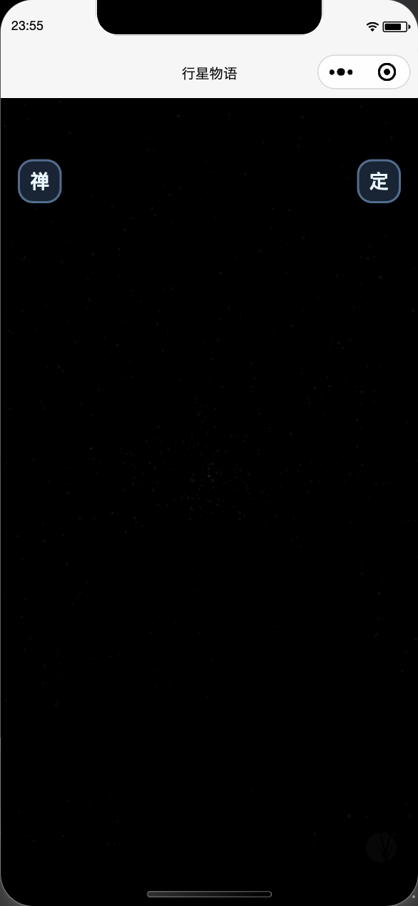
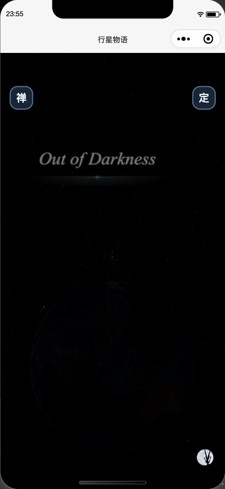
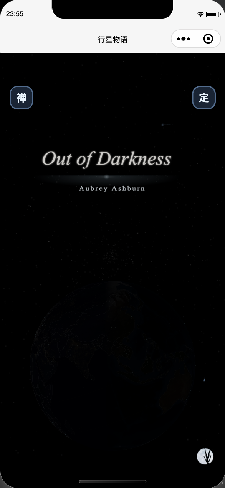
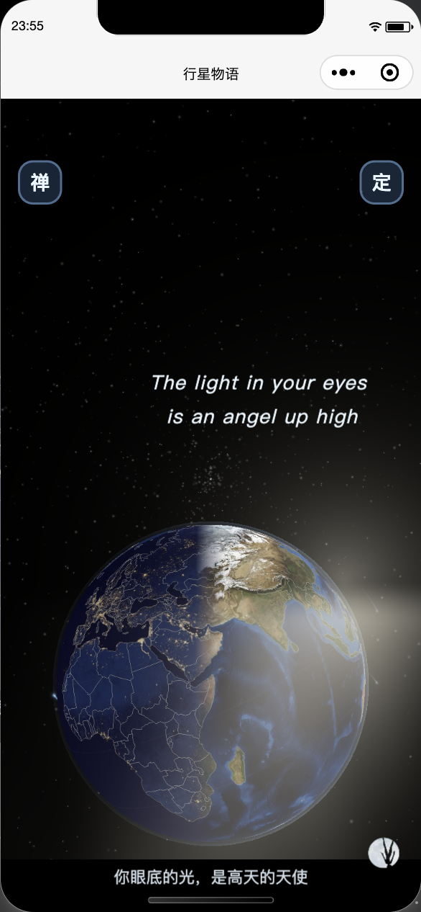
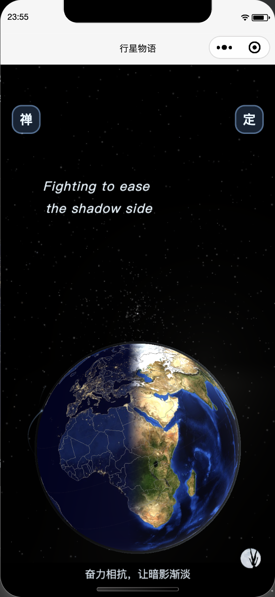

Out of Darkness · 禅定视觉第二版
Aubrey Ashburn · 微信开发者工具真实运行截图。前段自然播放，后段从音频 100 秒恢复后继续播放；主光始终等待实际歌词显示回调。

开场保留星点约 0.8 秒：地球仍暗，画面已有星点。
歌名提前渐显约 5.5 秒：歌名仍在渐显，完整显出需到约 7.4 秒。
暗段绕行光与掠星约 12 秒：三条不同轨迹持续绕行，上方有慢速掠星。
太阳散射光峰约 109 秒：歌词触发后，宽而柔的光从地球右上缘照来。
退光后仍明亮约 118 秒：光峰收落，地球保留较亮状态。歌名提前 2 秒，渐显延长至 3.4 秒；增加三条绕行光与慢速掠星。参考登月模式的柔和散射光，形成约 12 秒光峰，然后保持更明亮的地球。
设计与对齐记录 · 最终运行采样 · 37 项检查结果